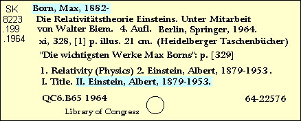

Copy: Names (1xx, 7xx)

100 1 Born, Max,‡d1882-1970.
700 1 Einstein, Albert,‡d1879-1955.
Check all personal names, corporate names, and conferences in the NAF.
Eliminate all personal name relators (‡e subfield).
- If the main entry is an editor, change it to a 700 field.
Go back to: Standard Numbers
Continue with: Titles